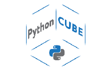

О ЦЕНТРЕ
НАПРАВЛЕНИЯ
НОВОСТИ
КОНТАКТЫ
О ЦЕНТРЕ
НАПРАВЛЕНИЯ
НОВОСТИ
КОНТАКТЫ

Выпускники получат практические навыки программирования на языке Python, научатся решать задачи на анализ статистических данных, обработке графической информации (построение стереоизображений, простых графических фильтров), научатся решать задачи на использование простого искусственного интеллекта.На занятия приглашаются ученики 8-9 классов. Требования: мотивация к обучению и системное мышление. Ребенок может не уметь программировать, но ему интересны математика, логика и информационные технологии. Входное тестирование, собеседование. Запись на обучение до 11 сентября 2019 года. Подробную информацию можно получить на сайте https://yandexlyceum.ru Возраст: 14 — 16 лет (8-9 класс)